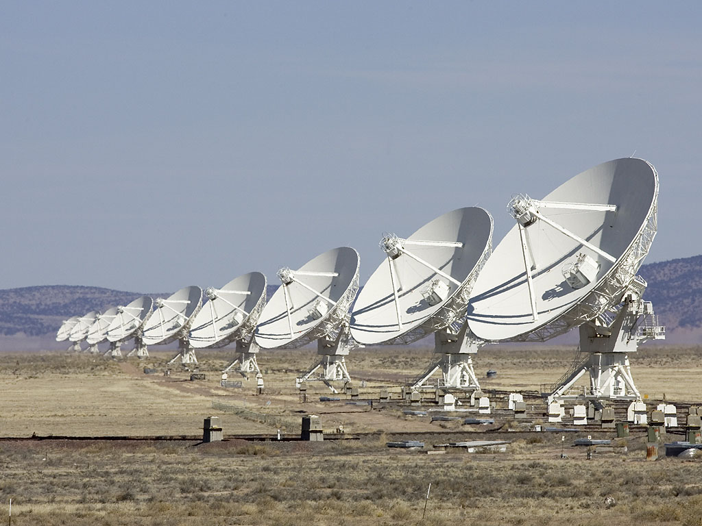

Executive Summary
이 글은 전파망원경이 만든 은하 목록에 실제로 없는 천체가 섞여 드는 까닭을 본다. 10월 1일 arXiv에 올라온 논문이고, 멕시코 국립자치대 전파천문학연구소와 미국 국립전파천문대 연구진이 함께 냈다. 대상은 VLA가 10기가헤르츠로 380시간 동안 들여다본 GOODS-N 영역이다. 3기가헤르츠보다 높은 주파수에서 관측된 외부은하 전파 서베이 가운데 가장 깊고 가장 해상도가 높은 영상이다.
픽셀 잡음은 0을 중심으로 한 정규분포에 거의 그대로 들어맞았다. 그런데 같은 영상에서 센 가짜 천체는 그 정규분포가 허락하는 수의 아홉 배였다. 영상을 만드는 알고리즘을 다섯 가지로 바꿔 봐도 비율은 움직이지 않았다. 남은 설명은 하나였다. 안테나를 멀리 벌려 해상도를 끌어올릴수록 관측이 훑지 못하고 남기는 자리가 늘고, 그 빈틈이 이웃한 픽셀의 잡음을 서로 묶어 놓는다.
4절까지는 논문이 실제로 측정한 것과 저자들이 달아 둔 단서를 따라간다. 5절에서 AI 학습 데이터 쪽으로 옮기는 대목은 논문에 없는 이 글의 해석이다.
주요 수치
출처: Jiménez-Andrade 외, Spurious sources in high-resolution VLA surveys arXiv:2610.02028(2026-10-01) 본문 및 그림
9배
가장 높은 해상도에서의 가짜 초과분
독립된 잡음 조각 하나당 가짜가 나올 확률이 정규분포 예측의 아홉 배다
9배→4배
해상도를 0.22각초에서 1각초로 낮출 때
덜 선명하게 볼수록 초과 배수가 줄어든다. 그래도 네 배는 남는다
7배
영상 한가운데만 추려도 남는 초과분
안테나가 가장 잘 받는 영역만 써도 아홉 배가 일곱 배로 내려갈 뿐이다
0.25~0.40
영상화 방식 다섯 가지의 가짜 비율
다섯 모두 같은 구간에 모여 오차 범위 안에서 구분되지 않았다
목록에 올라온 적 없는 천체
전파망원경이 하늘 한 구역을 깊게 들여다보면 결과물은 영상 한 장으로 끝나지 않는다. 영상에서 주변보다 밝은 점을 골라 좌표와 밝기를 적은 목록이 따라 나온다. 이 목록이 다음 연구의 출발점이 된다. 어느 은하가 별을 얼마나 빠르게 만드는지, 어떤 은하 한가운데에 블랙홀이 활동 중인지를 세는 통계가 전부 여기서 시작한다.
그런데 그 목록에는 실제로 하늘에 없는 항목이 섞인다. 천체가 아니라 잡음 덩어리가 어쩌다 밝기 기준선을 넘어 목록에 올라간 것이다. 천문학에서는 이것을 가짜 천체라고 부른다. 얼마나 섞이는지는 원래 계산으로 가늠한다. 잡음이 무작위라면 영상에 독립된 잡음 조각이 몇 개쯤 있는지를 세고, 그중 몇 개가 우연히 기준선을 넘는지를 정규분포 확률로 구하면 된다. 기준선을 잡음 세기의 다섯 배로 두면 조각 하나가 그 선을 넘을 확률은 천만분의 3쯤이다.
이번 논문이 다시 센 대상은 VLA가 10기가헤르츠로 찍은 GOODS-N 영역이다. VLA는 미국 뉴멕시코 사막에 접시 안테나 27대를 늘어놓은 전파망원경이고, 정식 이름은 칼 잰스키 초대형 전파간섭계다. 안테나 사이의 거리를 넓혔다 좁혔다 하며 배열을 바꿀 수 있는데, 넓게 벌릴수록 더 작은 것까지 갈라 볼 수 있다. 연구진이 쓴 영상은 A·B·C 세 배열로 380시간을 모아 만든 것으로, 해상도가 0.22각초다. 1각초는 1도를 3600으로 나눈 각도이니 0.22각초는 그 5분의 1쯤이다. 3기가헤르츠보다 높은 주파수의 외부은하 전파 서베이 가운데 가장 깊고 가장 선명한 영상이다.

겨눈 구역은 넓지 않다. 망원경이 한 번에 보는 시야가 좁아서 17개 방향을 조금씩 겹쳐 가며 297제곱각분을 덮었고, 그 덕에 가운데 영역은 감도가 거의 고르다. 297제곱각분이면 보름달이 하늘에서 덮는 넓이의 절반에 못 미친다. 그 좁은 구역을 380시간 들여다본 결과가 이 영상이고, 거기서 뽑은 목록을 두고 가짜를 세는 것이다.
어긋남을 먼저 눈치챈 쪽은 같은 연구진이었다. 2024년에 이 영역을 다루면서, 영상을 흐리게 해 해상도를 낮출수록 뒤집은 영상에서 잡히는 점이 줄어든다는 것을 알아봤다. 잡음 조각들이 서로 무관하다면 해상도를 바꿔도 계산과 실제의 차이는 그대로여야 한다. 이번 논문은 그 낌새를 여덟 가지 해상도에서 다시 재 본 후속 연구다.
잡음부터 확인했다. 여덟 가지 해상도로 만든 영상 모두에서 픽셀 밝기 분포는 0을 중심으로 한 정규분포에 잘 맞았다. 어두운 쪽 꼬리가 이상하게 두꺼운 구간도 없었다. 교과서대로라면 가짜는 계산한 만큼만 나와야 한다. 실제로 센 가짜는 그보다 훨씬 많았다.
영상을 뒤집어 가짜를 센다
목록에 오른 천체 하나하나를 두고 진짜인지 가짜인지 가려내려면 다른 망원경의 관측과 일일이 맞춰 봐야 한다. 품이 많이 들고, 다른 망원경이 못 본 어두운 천체는 억울하게 가짜로 몰린다. 전파천문학은 그래서 다른 길을 쓴다. 영상의 밝기를 통째로 음수로 뒤집은 다음, 진짜 영상에 돌린 것과 똑같은 탐지 프로그램을 돌린다.
뒤집은 영상에서 발견되는 밝은 점은 원래 영상에서는 움푹 꺼진 자리다. 하늘에는 주변보다 어두운 전파원이 없으므로 그 점은 전부 잡음이다. 잡음이 0을 중심으로 대칭이라면 그 개수가 곧 원래 영상에 섞였을 가짜의 개수다. 뒤집은 영상에서 센 점의 수를 원래 영상에서 센 점의 수로 나눈 값이 가짜 비율이 된다. 이 글이 인용하는 비율은 전부 이 방식으로 측정한 값이다.
연구진은 0.22각초 영상을 흐리게 번지는 방식으로 0.25각초부터 1각초까지 일곱 단계 더 만들어, 모두 여덟 가지 해상도에서 같은 절차를 돌렸다. 탐지 프로그램은 PyBDSF를 썼고 기준선은 잡음 세기의 다섯 배로 잡았다. 프로그램을 Blobcat으로 바꿔도, 흐리게 번지는 대신 관측 데이터 단계에서 해상도를 낮춰도 결과는 같았다. 그리고 결과는 모든 해상도에서 한 방향이었다. 독립된 잡음 조각 하나당 가짜가 나올 확률이 정규분포 예측을 넘었다. 0.22각초에서는 아홉 배였고, 1각초까지 흐리게 할수록 그 배수가 줄어 네 배가 됐다. 가짜의 대부분은 신호 대 잡음비가 6 이하인 희미한 점들에 몰려 있었다.
범인 후보를 하나씩 지운다
해상도가 높을수록 가짜가 느는 것 자체는 놀랍지 않다. 같은 넓이의 하늘을 더 잘게 쪼개 보면 독립된 잡음 조각의 수가 늘고, 조각이 많으면 그중 우연히 기준선을 넘는 것도 많아진다. 이 효과는 처음부터 계산식에 들어 있다. 아홉 배라는 숫자는 그 효과를 이미 계산에 넣고도 남은 초과분이다.
다음으로 영상 가장자리를 의심했다. 안테나는 보고 있는 방향 한가운데를 가장 민감하게 받고 바깥으로 갈수록 둔해진다. 이 감도 차이를 보정할 때 가장자리에서는 잡음까지 함께 증폭되므로 가짜가 몰릴 수 있다. 연구진은 안테나 감도가 80퍼센트 이상인 한가운데 영역만 따로 떼어 다시 셌다. 아홉 배가 일곱 배로 내려가는 데 그쳤다. 가장자리 효과는 분명히 있지만 설명하는 몫이 작다.
가장 유력한 후보는 영상을 만드는 방법이었다. 전파간섭계는 관측 데이터를 그대로 영상으로 쓰지 못하고 반복 계산으로 복원하는데, 그 알고리즘에 선택지가 여럿이다. 연구진은 17개 관측 방향 가운데 하나를 골라 다섯 가지 조합으로 다시 영상화했다. 넓은 시야 보정을 넣은 것과 뺀 것, 여러 주파수를 한꺼번에 다루는 방식과 고전적인 방식, 시야를 조각내어 따로 처리하는 방식을 섞었다. 다섯 영상의 가짜 비율은 전부 0.25에서 0.40 사이에 들어왔고, 오차 범위 안에서 서로 구분되지 않았다.
다섯 가운데 하나는 실제로 GOODS-N 목록을 만들 때 쓴 바로 그 방식이다. 나머지 넷은 그 선택을 하나씩 바꿔 본 것이고, 어느 쪽도 가짜를 덜 만들지 못했다. 0.25에서 0.40이라는 값은 관측 방향 하나를 따로 떼어 다시 영상화한 뒤 센 것이라 서베이 전체 목록의 비율로 그대로 옮길 수는 없다. 다만 가짜가 어쩌다 한둘 섞이는 수준이 아니라는 것은 이 숫자만으로도 드러난다.
이 비교 실험이 이 논문에서 가장 중요한 대목이다. 영상을 더 잘 만들면 해결되는 문제였다면 다섯 가지 방법이 같은 답을 낼 이유가 없다. 다섯이 전부 같은 구간에 모였다는 것은 가짜가 영상을 만드는 단계에서 생기지 않았다는 뜻이다. 문제는 그 앞에 있었다.
잡음을 묶어 놓는 더티빔의 곁가지
전파간섭계는 접시 하나로 하늘을 찍는 장치가 아니다. 안테나 두 대를 짝지어 신호를 맞대 보는 측정을 수없이 쌓아 영상을 복원한다. 짝마다 거리와 방향이 다르고, 그 짝이 측정한 값은 uv 평면이라는 가상의 지도 위에 점 하나로 찍힌다. 안테나가 27대이니 짝은 351쌍이고, 지구가 도는 동안 점들이 호를 그리며 지도를 메운다. 그래도 지도 전체를 다 채우지는 못한다. 빈 구멍이 남는다.
이 빈 구멍이 영상에 흔적을 남긴다. 하늘에 완벽한 점광원 하나만 있어도 복원한 영상에는 그 점 주위로 고리 모양의 희미한 무늬가 함께 그려진다. 이 무늬를 더티빔이라 하고, 중심 봉우리 둘레에 돋아난 밝고 어두운 고리를 곁가지(사이드로브)라 부른다. 안테나를 멀리 벌려 해상도를 올릴수록 지도의 빈 구멍은 커지고, 곁가지는 더 뚜렷해진다. 해상도와 빈 구멍은 맞바꾸는 관계다.
곁가지는 천체에만 붙는 것이 아니다. 잡음에도 똑같이 붙는다. 연구진은 영상 잡음의 자기상관함수를 측정해 이 지점을 직접 보였다. 자기상관함수는 한 픽셀의 값이 조금 떨어진 이웃 픽셀의 값과 얼마나 같이 움직이는지를 거리별로 적은 곡선이다. 이웃끼리 아무 상관이 없다면 중심에 뾰족한 봉우리 하나만 서고 나머지는 평평해야 한다. 0.22각초 영상에서는 중심 봉우리 둘레에 음의 골이 대칭으로 또렷하게 파였고, 그 간격이 빔 크기와 비슷했다. 1각초로 흐리게 한 영상에서는 같은 곡선이 매끈해지며 골이 거의 사라졌다. 이 측정에는 2023년 은하 관측 쪽에서 제안된 자기상관함수 분석법을 구현한 ESSENCE 패키지를 그대로 가져다 썼다.
잡음이 서로 묶여 있으면 무슨 일이 생기는가. 가짜를 세는 계산식은 잡음 조각 하나하나가 서로 독립이라고 가정하고 세운 것이다. 실제로는 곁가지가 조각들을 묶어 함께 오르내리게 하므로, 한 자리에서 깊은 골이 생기면 그 둘레도 같이 내려간다. 독립일 때보다 깊은 골이 훨씬 자주 생기고, 그 골이 기준선을 넘어 목록에 오른다. 계산식이 가짜를 적게 보는 이유가 여기 있다.
저자들이 결론에 적은 문장은 분명하다. 해상도가 높다는 사실 자체가 가짜를 더 만드는 것이 아니다. 아주 높은 해상도를 얻으려면 보통 안테나를 멀리 벌려야 하고, 그렇게 성기게 모은 관측이 곁가지가 강한 빔을 만들며, 그 빔이 상관된 잡음을 들여와 가짜를 늘린다. 독립 잡음 조각이 많아지는 효과와 영상 가장자리 효과도 얼마쯤 보태지만 초과분 전부를 설명하지는 못한다.
그래서 저자들의 제언도 영상 쪽이 아니라 관측 쪽을 향한다. 지금 설계 중인 차세대 전파간섭계 ngVLA와 SKA는 해상도만 높일 것이 아니라 uv 지도를 충분히 촘촘히 메울 수 있게 설계해야 한다는 것이다. 그러지 않으면 해상도가 좋아진 만큼 목록에 섞이는 가짜도 함께 늘어난다. 성긴 샘플링의 영향을 줄여 줄 다른 복원 알고리즘이 있을지는 앞으로의 숙제로 남겨 두었다.
고치는 오류는 어느 단계의 것인가
여기서부터는 논문에 없는 이야기다. 이 연구의 구조가 데이터를 다루는 다른 자리에서도 그대로 보이기 때문에 적어 둔다.
학습용 데이터셋에서 이상한 라벨이나 설명되지 않는 오류가 나오면 손이 먼저 가는 곳은 대체로 뒷단이다. 라벨 정제 규칙을 손보고, 이상값을 거르는 모델을 하나 더 얹고, 검수 기준을 조인다. 이 논문에서 다섯 가지 영상화 알고리즘을 비교한 실험이 바로 그 손질에 해당한다. 그리고 다섯이 전부 같은 답을 냈다. 처리 단계를 아무리 바꿔도 움직이지 않는 오류가 있다는 뜻이다.
움직이지 않은 이유는 그 오류가 처리 단계에서 생긴 것이 아니어서다. 안테나 배치가 정해지는 순간 uv 지도의 빈 구멍이 정해지고, 빈 구멍이 정해지는 순간 잡음이 어떤 모양으로 뭉칠지가 정해진다. 관측을 시작하기도 전에 결정된 성질을, 영상이 다 나온 뒤에 지울 방법은 없다. 데이터 수집 설계가 하는 일도 같다. 센서를 어디에 몇 개 놓을지, 어느 시간대와 어느 사용자군을 얼마나 자주 담을지, 라벨러를 어떤 기준으로 뽑을지가 정해지는 순간 그 데이터가 어떤 모양으로 틀릴지도 함께 정해진다.
한 가지 더 눈에 띄는 것은 잡음의 겉모습이 멀쩡했다는 점이다. 픽셀 분포는 정규분포에 잘 맞았고 어두운 쪽 꼬리도 두껍지 않았다. 흔히 쓰는 분포 검사만 돌렸다면 이 영상은 통과했을 것이다. 문제가 드러난 것은 값 하나하나의 분포가 아니라 값들 사이의 관계를 봤을 때였다. 데이터 품질을 분포 지표로만 재는 자리에서도 같은 일이 생긴다. 결측률도 중복률도 기준을 넘지 않는데 모델이 특정 구간에서만 틀린다면, 각 항목이 아니라 항목들이 어떻게 함께 움직이는지를 봐야 한다.
마지막은 맞바꿈이다. 해상도를 1각초로 낮추면 아홉 배가 네 배로 준다. 가짜가 줄어드는 대신 작은 구조를 갈라 보는 능력을 잃는다. 더 정밀하게 재려는 모든 시도가 같은 대가를 치른다. 더 자주, 더 잘게 수집하면 그만큼 채우지 못한 빈틈도 늘고, 그 빈틈이 만드는 상관된 오류도 늘어난다. 정밀도를 올리는 계획을 세울 때 수집 밀도를 함께 올릴 계획이 없다면, 올라간 해상도만큼 가짜도 함께 올라온다.
Editor's Note
페블러스가 데이터 품질을 볼 때 자주 되묻는 물음이 있다. 지금 고치고 있는 이 오류는 처리 단계에서 생긴 것인가, 수집 단계에서 이미 정해진 것인가. 전파천문학은 이 물음에 답할 도구를 하나 갖고 있다. 영상을 뒤집어 있어서는 안 될 것을 세어 보고, 처리 방법을 바꿔 가며 그 수가 움직이는지 확인한다. 움직이지 않으면 앞 단계를 본다. 이 절차는 천문학 바깥에서도 쓸 만하다. 다만 이 연결은 논문의 주장이 아니라 이 글의 해석이다.
여기까지 읽어 주셔서 감사하다. 원문은 arXiv:2610.02028에서 전문을 볼 수 있고, Revista Mexicana de Astronomía y Astrofísica 100권에 실릴 예정이다. 이 글의 수치는 본문과 그림에서 직접 확인했다. 수집 설계가 만든 오류를 뒤늦게 발견한 경험이 있다면 어떤 신호로 알아챘는지 나눠 주시면 좋겠다.
(주)페블러스 데이터 커뮤니케이션팀
2026년 10월 4일